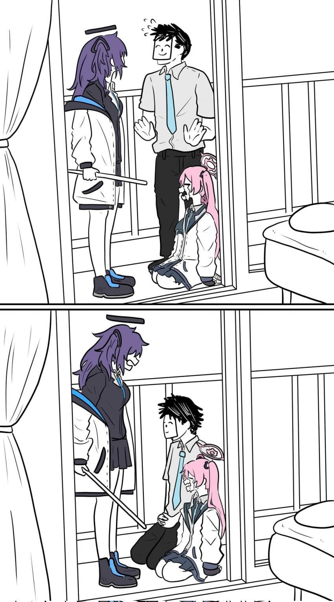
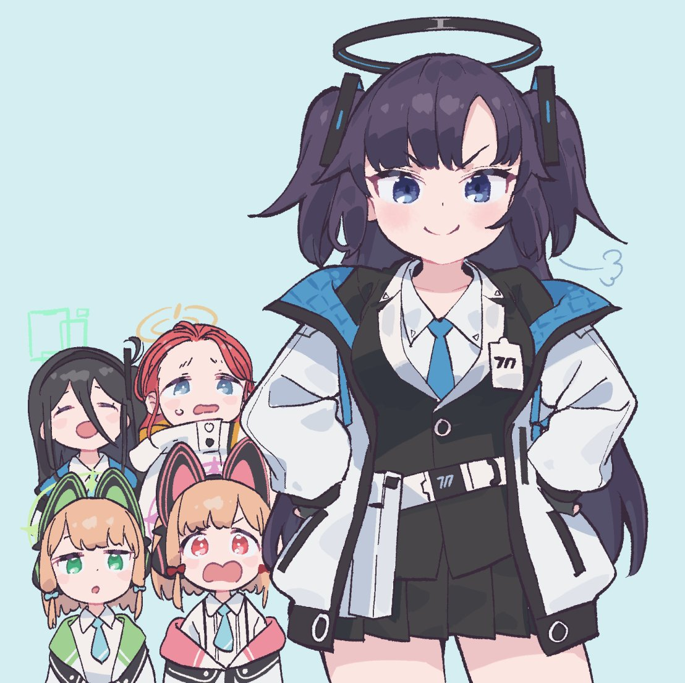
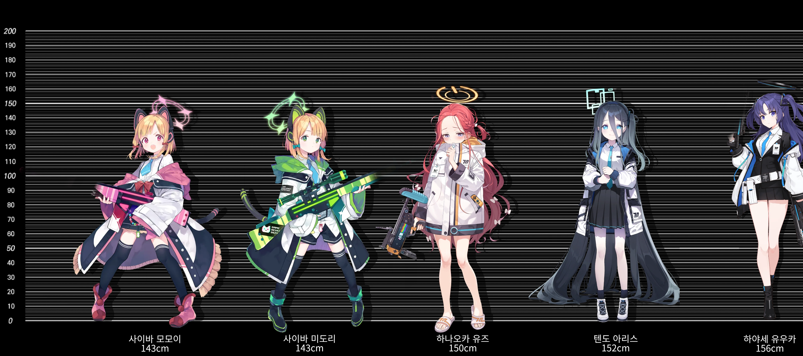
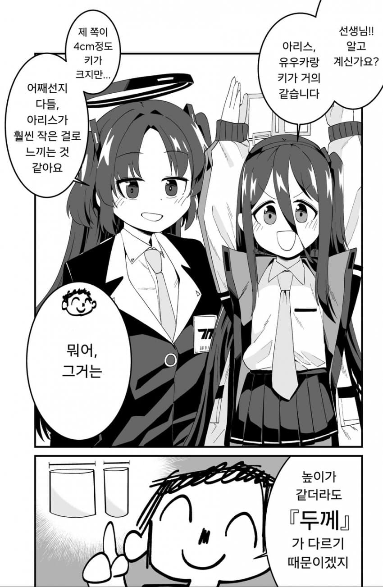
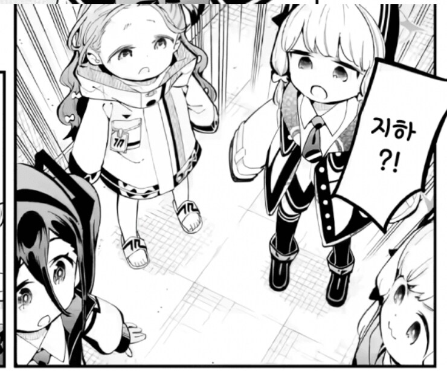
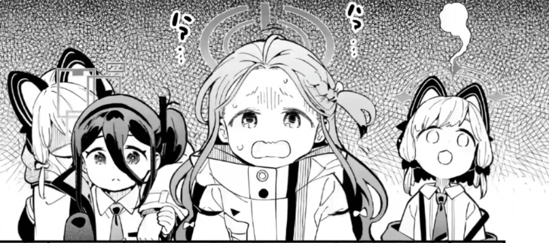
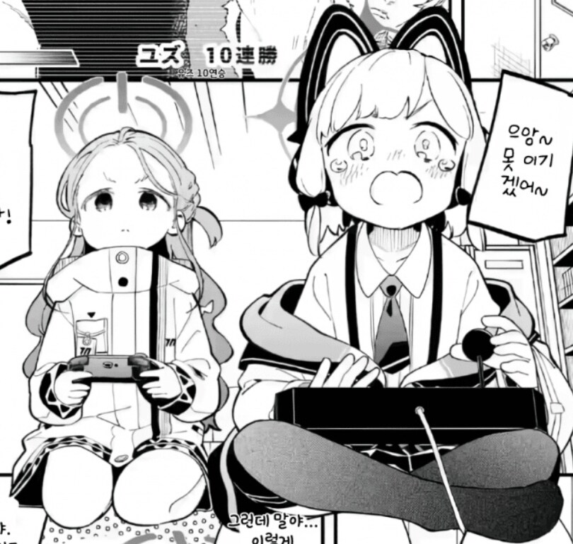
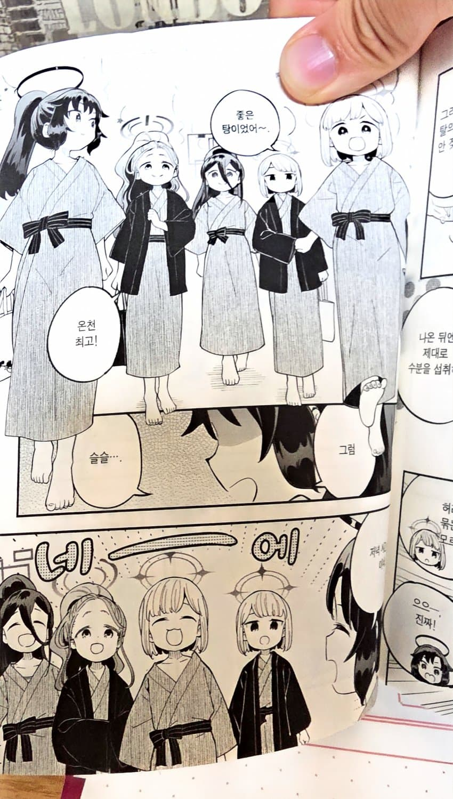
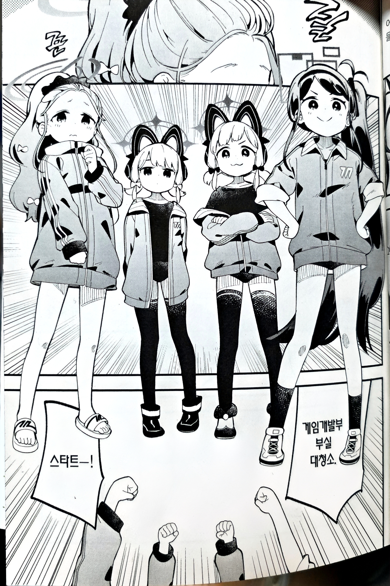

게임을 안하더라도 프로 개붕이들은 유우카라는 케릭터를 알거다

선생한테 잔소리하는 케릭터 혹은
게임개발부를 챙겨주는 엄마같은 속성으로 유명하다
그러다 보니깐 자연스럽게
유우카가 키가 크고 겜창부는 다 키가 작다는

이런 이미지가 가득한데
실제로는


겜창부는1학년치고는 키 편차가 큰편이라
나란히 세워놓으면 키 차이로 인한 위화감이 생긴다
이를 극복하기 위한 만화 작가는

위에서 아래를 보는 시점이나


의도적으로 배치를 달리하여 원근감을 이용하거나


의도적으로 나란히 안세우고 키순대로 앞뒤로 밀어서
도드라지는 키차이를 줄이는 노력을한다
고증을 지키면서 위화감을 억제할려는 작가의 노력은 가히 만신이라고 불릴만하다
만신